Oct 2021 - Jan 2023
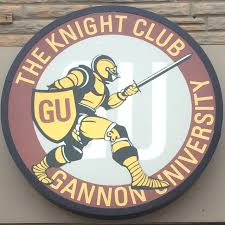
Bartender
The Knight Club
I joined the Knight Club as a bartender to improving communication and learning US cultures. The job was a great experience, met tons of people and managed a lot of events. But sometimes it does get hectic, especially in the weekend! (If you know what I'm talking about!). The worst part is, the bar served free popcorn, and I literally saw someone diving their heads into the kettle.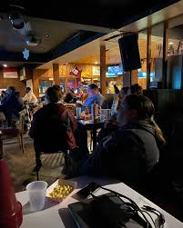
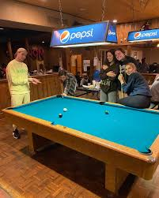
Summer 2022
Summer Conference Assistant
Department of Residence Life
This job is by far the most labor-intensed job that I have ever done. We were working from 8 to 4 every day, cleaning student's dorm and moving furniture (200lbs fridges, 500lbs wardrobes, etc...). The pay was quite low, but the good thing was that we all got free summer housing. This job taught me a lot of things, but one thing is to keep pushing during the most challenging time of my life. During this item, I met Seph and volunteered at Our West Bayfront - a non-profit organization that helps community around Erie with their needs, and organize activities for children.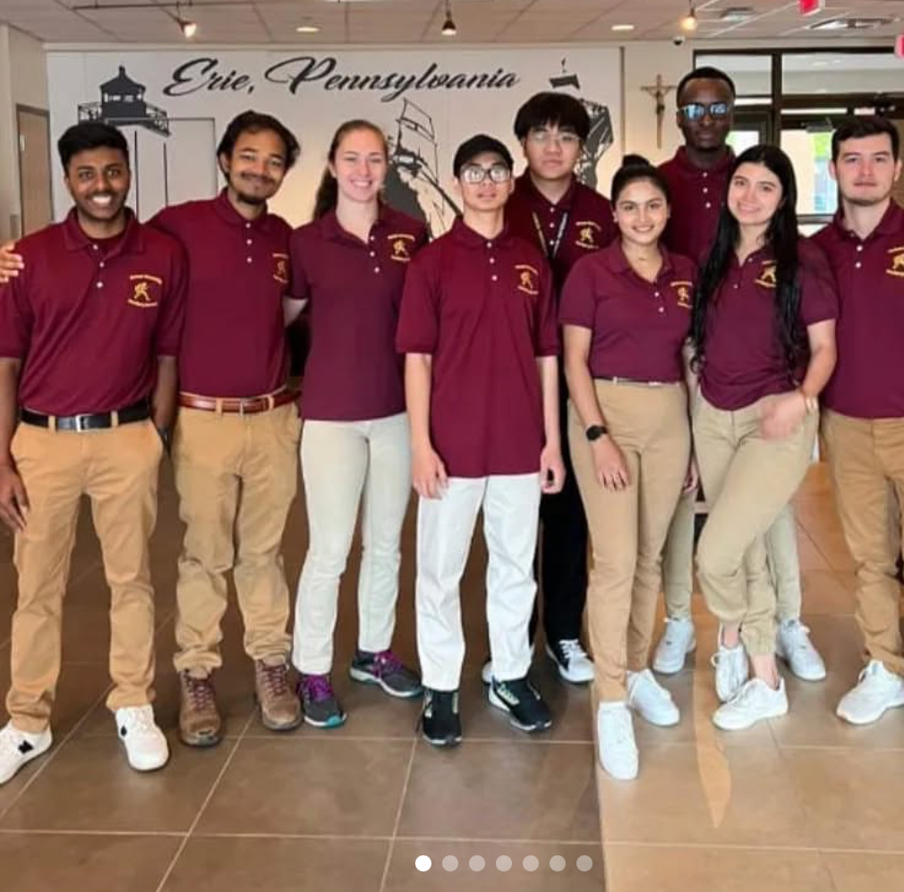
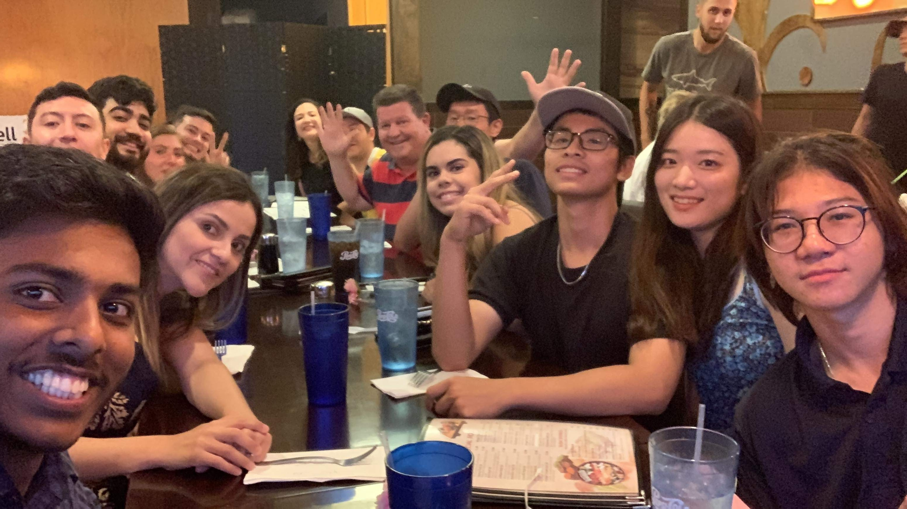

May 2023 - May 2024
Data Analyst
I came back and work for Residence Life in-office position. I make sure that all datas are updated and synchronized between the students rooms and keys, and make sure that nothing get lost in the transportations.It was here that I started to develop the interest in Machine Learning. I thought how cool would it be if we had a system that can automatically process information in real-time. Recommedation system to find the best roommate for each student.
Aug 2024 - May 2025
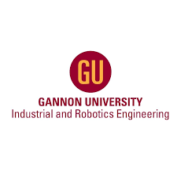
VR Application Developer
I worked under the guidance of Prof. Ohu, Ikechukwu.The goal of this project was to developed a Welding-Lathe machine - that can help workers practiced in a simulated-controlled virtual environment, which can improve their experience significantly. I don't think people have talked about this enough. I think AI cannot help workers learn HVAC or Mech/Industrial Engineer yet, so it is very important to both us and also our partnership with another industrial company that was involved in this project.
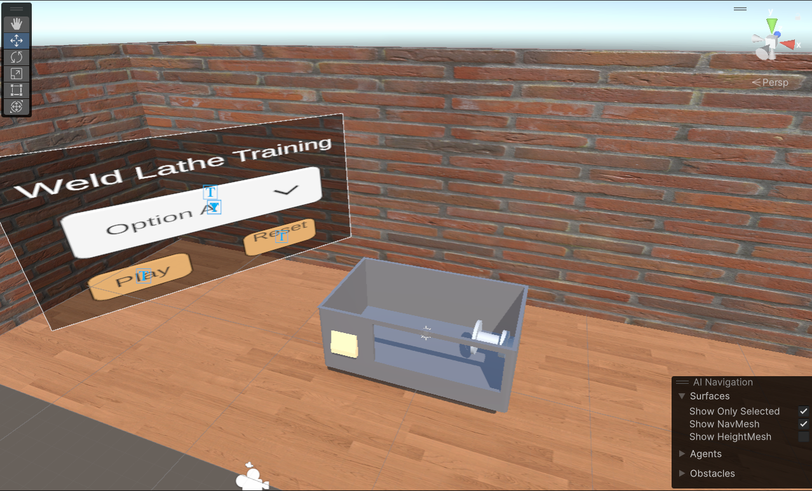
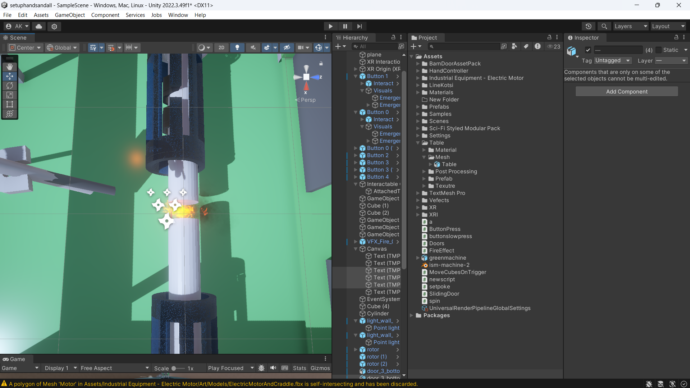
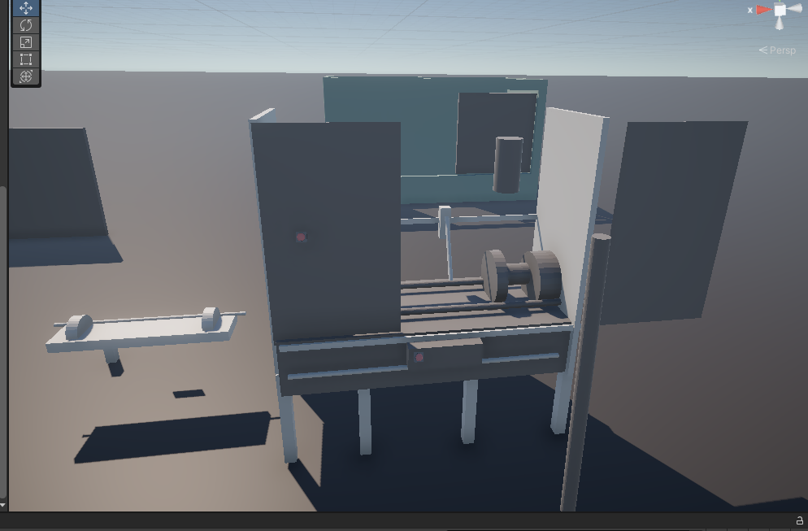
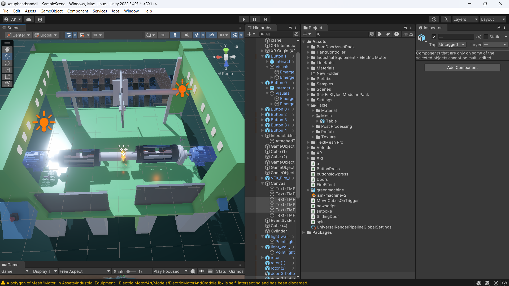
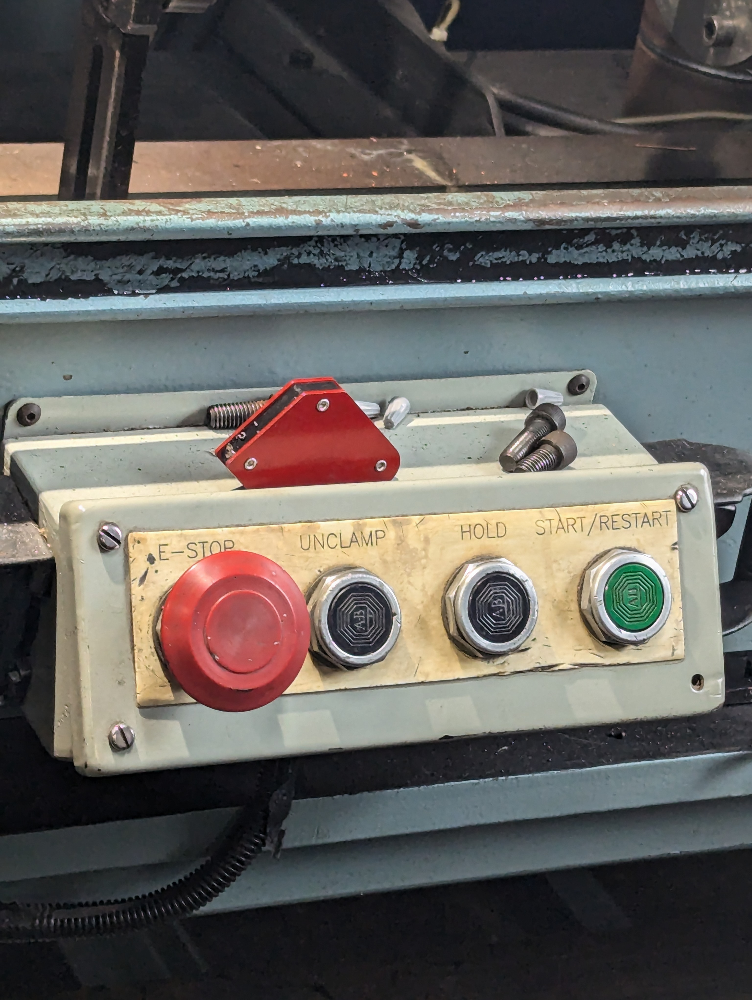
Dec 2024 - May 2025
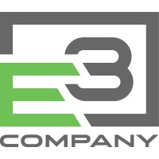
Software Engineer
E3 Company
I joined as a software engineer between GU Incubator and E3 Company.My main responsibility were developing a distributed system to measured gas pressure, level and different electric voltage of a gas plant and display the data to the dashboard. Additionally, an alert will be created and notified when a measurement exceed a threshold.
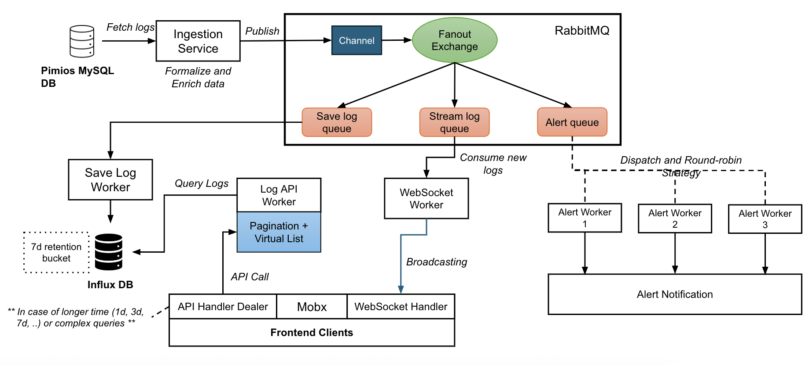
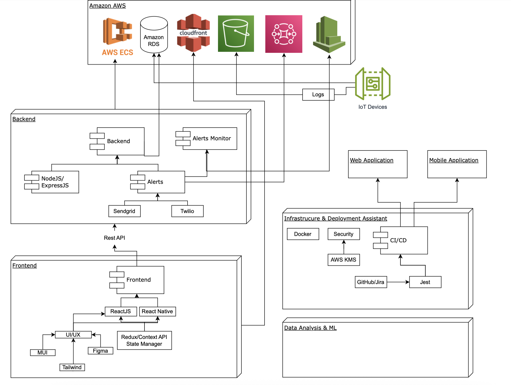
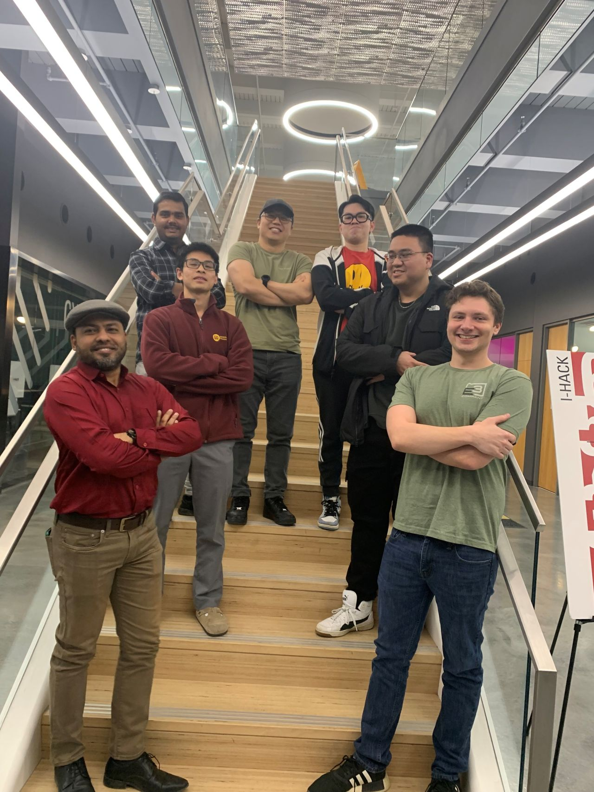
Dec 2024 - May 2025
Research Assistant - Smart Manufacturing
Department of BISE
My main responsibility was to collect fault 3D printed data (videos) and use Machine Learning to detect errors.-
We investigated:
- What caused the 3D print failure—filament, glue, or incorrect slicing?
- If one part fails, should we continue printing the rest or restart?
- How can we capture the entire scene with only a default camera on the right?